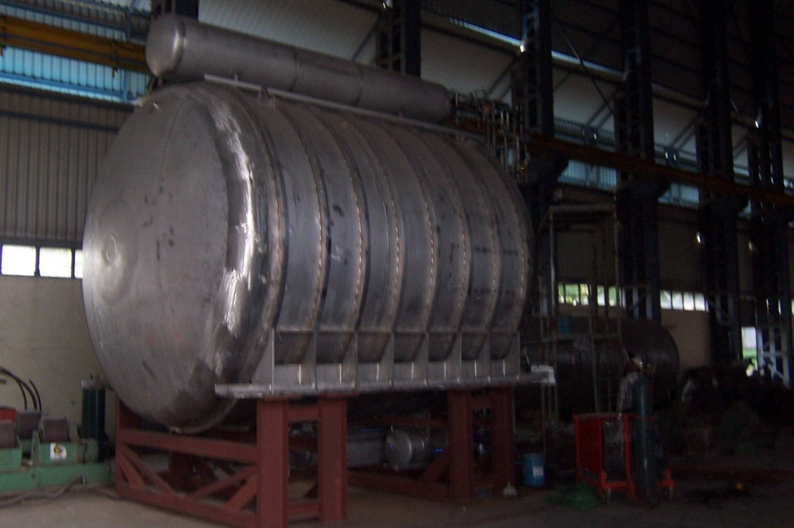

1.Cryocan- Liquid Nitrogen Dewars( 0.5 Ltr to 55 Ltr)
Cryocan is a double walled non-pressurised Aluminium container used for storing Liquid Nitrogen. Cryocans are mainly
used to preserve bull semen under extreme cold temperatures i.e @ -196 Deg C in liquid Nitrogen. The bull semen thus
preserved is used for artificial insemination in the field to get a better breed of cows for higher milk yield.
Cryocans are also used for various other applications embryos & stem cells preservation,IVF clinics ,Dermatology and
shrink fitting etc. Being a signature product of BG(Cryo) holding a majority market share in the country , these are
also exported to Europe ,Singapore, Sri Lanka, Bangaladesh, etc. Cryocans are built to renowned IS:11552 standards.
Bulk Storage Cryogenic containers are manufactured with Stainless steel to preserve large doses of semen in semen
storage and collection centers.
Manufacturing facility has a installed capacity to produce around 25000 Cryocans per year.
2.Cryovessels- Pressurised Large Capacity Cryogenic containers
Cryovessels are also double walled vessels with inner vessel made of Stainless Steel and outer vessel made of carbon
steel. These are used for storage and transportation of Liquefied gases like Liquid Nitrogen (LIN), Liquid Oxygen
(LOX) , Liquid Argon (LAr) and Liquified Natural gas(LNG). Developed with initial technical knowhow from Wessignton
Cryogenics. UK, BG(Cryo) built on to much higher capacities using in house expertise.
Cryovessels are designed and manufactured confirming to various internationsl codes Viz.ASME,EN,ADM,BS,&ISO under
reputed Third Party Inspection agencies like LRA, BV, TUV, PDIL etc to meet rough Indian conditions.
BG(Cryo) offers a wide range of Cryogenic Vessels :
Cryogenic Storage vessels(LIN,Lox,LAr,LNG): 100 Ltr to 150,000 Ltr
Cryogenic Transport Vessels(LIN,Lox,LAr,LNG): 500 Ltr to 40000 Ltr
BG(Cryogenics) is the pioneer in Multi Layered Super Insulation technology. Transport vessels built with cold
stretched process and MLSI insulation offers optimized payload carrying capacity.
3.Pressure Vessels
Leveraging on its strength in manufacturing Pressurised Cryogenic Storage/Transport Vessels, BG(Cryo) ushered into
manufacturing of Stainless Steel, Carbon Steel and Alloy steel Pressure Vessels required by Refineries and process
industry. BG(Cryo) manufactures significant number of Pressure Vessels to various Refineries of IndianOil.It
undertakes complete design, sourcing of raw material, fabrication under third party inspection agency (TPI) / PMC,
testing and supply of pressure vessel with variety of MOC.
Current manufacturing range Includes:
Carbon steel pressure vessels: Upto 40 mm Thk, 100000 Ltr
Stainless steel pressure vessels: Upto 30 mm Thk, 100000 Ltr
4.Custom Built Special Projects
BG(Cryo) executes custom built special projects in the field of Cryogenics involving PLC based control system for
various applications. The latest project being LOX Storage and Delivery System for NMRL’s(Naval Material Research
Laboratory) Land Based Prototype (LBP) of Fuel-Cell based power supply for submarines.
Lox Delivery system for NMRL

5.LNG logistics and regassification systems
BG(Cryo) offers customised LNG solutions . Currently a LCNG/LNG fuelling facility a first of its kind in the country
is being set up on turn key basis at IndianOil’s integrated fuel complex at Anayara –Tiruvananthapuram, Kerala.
6. Aviation Equipments
BG(Cryo)’s expertise in Double walled containers manufacturing is leveraged for development of Containerised aviation
fuel tanks.This Make in India initiative is benefitting IOCL in speedier setting up of small sized AFS.BG(Cryo) has
built on its capabilities and developed space saving design for 35 KL containerised tanks.
IOCL BG(Cryo) nashik plant has the unique distinction of being the only facility certified by PESO for manufacturing
under SMPV rules as well as Petroleum rules.
7. Refuellers
BG(Cryo)’s Latest addition to its business vertical is Refuellers. It is a strategic decision to not only increase its portfolio but to be self reliant on critical aspects. Refueller’s manufacturing capability is a shot in the arm for Indianoil’s aviation business and it provides a platform to develop next generation refuelling solutions without being too much reliant on external resources.
BG(Cryo) has already delivered 6KL refullers to various AFS and Army locations.Batch of 11KL and 16 KL refuellers is in final stages of manufacturing.Again the focus has been not merely replicate but to reengineer and deliver what stands out.